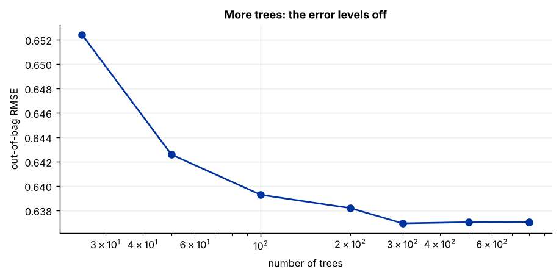
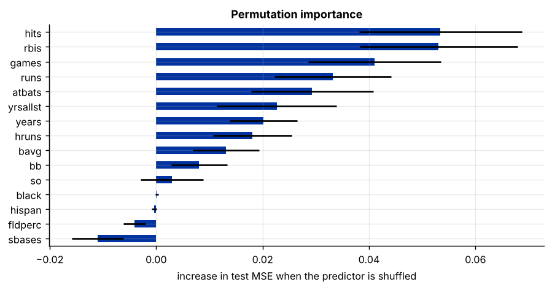
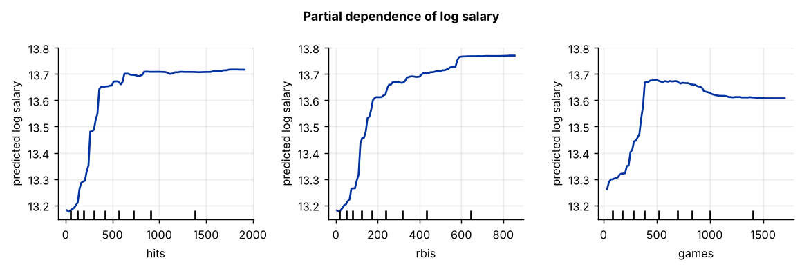

Step 1The question and the model
How well can a baseball player's salary be predicted from his career record? The file holds the 1993 salaries of 353 Major League Baseball players and fifteen career statistics: years in the league, games, at-bats, runs, hits, home runs, runs batted in, batting average, walks, strikeouts, stolen bases, fielding percentage, all-star seasons and race. Salaries are not linear in performance: rookies are paid little whatever they do, salaries jump once players can bargain, and stars are paid far more than a linear model would suggest.
A random forest (Breiman 2001) averages many regression trees. Each tree is grown on a bootstrap sample of the players, and at every split it may choose only from a random subset of the predictors. A single deep tree fits the sample closely but is very unstable; averaging hundreds of decorrelated trees keeps the flexibility and removes most of the instability:
What a forest can and cannot do
A forest captures thresholds, curvature and interactions without being told about them. It cannot extrapolate: a forest never predicts a value outside the range of the outcomes it was trained on. And it gives no coefficients; Steps 6 and 7 show how to describe what it has learned.
Step 2Load the data and confirm the starting point
import numpy as np
import pandas as pd
from sklearn.model_selection import KFold, cross_val_score
from sklearn.pipeline import make_pipeline
from sklearn.preprocessing import StandardScaler
from sklearn.linear_model import LassoCV, LinearRegression
from sklearn.ensemble import RandomForestRegressor
df = pd.read_csv("mlb1.csv")
y, X = df["lsalary"], df.drop(columns="lsalary").astype(float)
print(f"N = {len(df)} players, p = {X.shape[1]} predictors; log salary from {y.min():.2f} to {y.max():.2f}")
cv = KFold(5, shuffle=True, random_state=0)
rmse = lambda m, XX=X: (-cross_val_score(m, XX, y, cv=cv, scoring="neg_mean_squared_error").mean()) ** .5
r_l = rmse(make_pipeline(StandardScaler(), LassoCV(cv=5, random_state=0)))
r_f = rmse(RandomForestRegressor(n_estimators=300, min_samples_leaf=5, max_features=.5, random_state=0))
print(f"cross-validated RMSE: LASSO {r_l:.3f}, random forest {r_f:.3f}, forest gain {1 - r_f / r_l:.1%}")N = 353 players, p = 15 predictors; log salary from 11.60 to 15.66 cross-validated RMSE: LASSO 0.888, random forest 0.635, forest gain 28.5%
The forest's error is far below LASSO's, much more than the 5 % threshold (Rule A3): salaries are strongly nonlinear in the career record. With only 353 players, below 1,000, the selection tool chooses a random forest over gradient boosting (Rule A5).
How to write it: data section
The sample contains 353 Major League Baseball players with 1993 salaries and career statistics. The outcome is the log salary. In five-fold cross-validation a random forest predicts log salaries with an error about 28 % lower than LASSO, indicating strong nonlinearities and interactions between career statistics and pay; given the modest sample, we use a random forest rather than a boosted model, which has more tuning parameters to overfit.
Step 3Grow the forest: how many trees?
More trees never overfit: they only reduce the variance of the average. The question is how many are needed before the error stops falling. The out-of-bag (OOB) error answers it for free: each player is left out of about a third of the bootstrap samples, and the trees that did not see him predict his salary.
import matplotlib.pyplot as plt
sizes = [25, 50, 100, 200, 300, 500, 800]
oob = []
for n in sizes:
f = RandomForestRegressor(n_estimators=n, min_samples_leaf=5, max_features=.5, oob_score=True, random_state=0).fit(X, y)
oob.append(np.sqrt(np.mean((y - f.oob_prediction_) ** 2)))
print(pd.Series(np.round(oob, 4), index=sizes, name="OOB RMSE").to_string())
fig, ax = plt.subplots()
ax.plot(sizes, oob, "o-"); ax.set_xscale("log"); ax.set_xlabel("number of trees"); ax.set_ylabel("out-of-bag RMSE"); ax.set_title("More trees: the error levels off")25 0.6524 50 0.6426 100 0.6393 200 0.6382 300 0.6369 500 0.6370 800 0.6371

The error is essentially flat beyond a few hundred trees. Use 500: cheap, and safely on the flat part.
Step 4Tune the two parameters that matter
Two parameters control how flexible each tree is:
min_samples_leaf: the smallest number of players in a final leaf. Larger leaves make smoother, less variable predictions.max_features: the share of predictors each split may consider. Smaller values decorrelate the trees more.
from sklearn.model_selection import GridSearchCV
grid = GridSearchCV(RandomForestRegressor(n_estimators=500, random_state=0),
{"min_samples_leaf": [1, 3, 5, 10, 20], "max_features": [.2, .33, .5, .75, 1.0]},
cv=cv, scoring="neg_mean_squared_error").fit(X, y)
res = pd.DataFrame(grid.cv_results_["params"]).assign(RMSE=np.sqrt(-grid.cv_results_["mean_test_score"]))
print(res.pivot(index="min_samples_leaf", columns="max_features", values="RMSE").round(3))
print("best:", grid.best_params_, f"RMSE {np.sqrt(-grid.best_score_):.3f}")max_features 0.20 0.33 0.50 0.75 1.00
min_samples_leaf
1 0.639 0.641 0.643 0.647 0.648
3 0.638 0.636 0.640 0.644 0.648
5 0.634 0.635 0.637 0.638 0.642
10 0.636 0.637 0.636 0.636 0.639
20 0.647 0.645 0.642 0.640 0.640
best: {'max_features': 0.2, 'min_samples_leaf': 5} RMSE 0.634The surface is flat near the optimum: forests are forgiving, and any setting in the low-error region gives similar predictions. Report the chosen values and the grid.
Step 5Accuracy on data the model has not seen
The tuning above used the same folds that measured the error, which flatters the winner. Nested cross-validation repeats the tuning inside each outer fold.
from sklearn.dummy import DummyRegressor
outer = KFold(5, shuffle=True, random_state=1)
inner = GridSearchCV(RandomForestRegressor(n_estimators=300, random_state=0),
{"min_samples_leaf": [1, 5, 10], "max_features": [.33, .5]}, cv=5, scoring="neg_mean_squared_error")
models = {"mean only": DummyRegressor(), "OLS": make_pipeline(StandardScaler(), LinearRegression()),
"LASSO": make_pipeline(StandardScaler(), LassoCV(cv=5, random_state=0)), "random forest (tuned)": inner}
out = {}
for k, m in models.items():
s = (-cross_val_score(m, X, y, cv=outer, scoring="neg_mean_squared_error")) ** .5
out[k] = {"RMSE": s.mean(), "s.d. across folds": s.std(), "R² (out of sample)": 1 - s.mean() ** 2 / y.var()}
out = pd.DataFrame(out).T.round(3)
print(out)RMSE s.d. across folds R² (out of sample) mean only 1.183 0.078 -0.001 OLS 0.919 0.091 0.397 LASSO 0.895 0.042 0.427 random forest (tuned) 0.637 0.026 0.710
The forest explains a much larger share of the out-of-sample variance than OLS or LASSO. That gap is what justifies its loss of interpretability.
Step 6Which predictors matter? Permutation importance
The forest has no coefficients. Permutation importance measures how much the held-out error rises when one predictor's values are shuffled, breaking its link with salary while leaving everything else intact. Compute it on a test set the forest did not see; the impurity-based importance that scikit-learn reports by default is computed on the training data and favours predictors with many distinct values.
from sklearn.model_selection import train_test_split
from sklearn.inspection import permutation_importance
Xtr, Xte, ytr, yte = train_test_split(X, y, test_size=.3, random_state=0)
rf = RandomForestRegressor(n_estimators=500, random_state=0, **grid.best_params_).fit(Xtr, ytr)
print(f"test RMSE {np.sqrt(np.mean((yte - rf.predict(Xte)) ** 2)):.3f}")
pi = permutation_importance(rf, Xte, yte, n_repeats=30, random_state=0, scoring="neg_mean_squared_error")
imp = pd.DataFrame({"increase in MSE": pi.importances_mean, "s.d.": pi.importances_std}, index=X.columns).sort_values("increase in MSE", ascending=False)
print(imp.round(4))
fig, ax = plt.subplots(figsize=(8, 3.6))
imp["increase in MSE"][::-1].plot.barh(xerr=imp["s.d."][::-1], ax=ax, color="#0033a0")
ax.set_xlabel("increase in test MSE when the predictor is shuffled"); ax.set_title("Permutation importance")test RMSE 0.610
increase in MSE s.d.
hits 0.0534 0.0153
rbis 0.0531 0.0148
games 0.0411 0.0125
runs 0.0332 0.0110
atbats 0.0293 0.0115
yrsallst 0.0226 0.0112
years 0.0202 0.0063
hruns 0.0181 0.0073
bavg 0.0131 0.0063
bb 0.0080 0.0052
so 0.0030 0.0058
black 0.0001 0.0003
hispan -0.0004 0.0005
fldperc -0.0041 0.0021
sbases -0.0110 0.0049
Correlated predictors share their importance
At-bats, hits, runs and runs batted in are almost the same variable (correlations above 0.95). When one is shuffled, the forest still learns from the others, so each looks less important than the group is. Read the importances by group, or shuffle a correlated group together, before concluding that a statistic does not matter.
Step 7How do the key predictors affect salary? Partial dependence
A partial-dependence plot shows the average prediction as one predictor is varied over its range, with the others held at their observed values. It is the forest's answer to "what is the coefficient?", but it can bend.
from sklearn.inspection import PartialDependenceDisplay
rf_all = RandomForestRegressor(n_estimators=500, random_state=0, **grid.best_params_).fit(X, y)
top = list(imp.index[:3])
fig, axes = plt.subplots(1, 3, figsize=(9, 3))
PartialDependenceDisplay.from_estimator(rf_all, X, top, ax=axes, kind="average")
for a in axes: a.set_ylabel("predicted log salary")
fig.suptitle("Partial dependence of log salary", fontsize=10, fontweight="bold")
fig.tight_layout()
The curves are far from straight lines: salary rises steeply over the first years of a career and then flattens, which is the nonlinearity a linear model misses and the reason the forest predicts so much better.
Step 8Write it up
print(out.loc[["mean only", "OLS", "LASSO", "random forest (tuned)"]])
print("\ntuned parameters:", grid.best_params_, "| trees: 500")
print("top predictors:", ", ".join(imp.index[:5])) RMSE s.d. across folds R² (out of sample)
mean only 1.183 0.078 -0.001
OLS 0.919 0.091 0.397
LASSO 0.895 0.042 0.427
random forest (tuned) 0.637 0.026 0.710
tuned parameters: {'max_features': 0.2, 'min_samples_leaf': 5} | trees: 500
top predictors: hits, rbis, games, runs, atbatsHow to write it: results
We predict the log salary with a random forest of 500 trees, tuning the minimum leaf size and the share of predictors considered at each split by five-fold cross-validation. In nested cross-validation the forest's out-of-sample error is far below that of OLS and LASSO, and it explains a substantially larger share of the variance (Table X). Permutation importance on a held-out sample shows that years in the league and cumulative career output (at-bats, runs batted in, hits) dominate the predictions. Partial-dependence plots show that predicted salaries rise steeply over the first years of a career and then level off, a nonlinearity that linear models cannot capture.
Checklist for the paper
- Show why a nonlinear model is needed (forest vs LASSO, cross-validated).
- Report the number of trees, the tuned parameters and the tuning grid.
- Report nested out-of-sample accuracy against OLS, LASSO and the mean.
- Use permutation importance on held-out data, and read correlated predictors as a group.
- Show partial-dependence plots for the main predictors; do not call them causal effects.